A Simple Buffer Overflow
Buffer overflows are the typical starting point when learning about binary exploitation. For my own research, I wrote a very simple vulnerable program in C, tossed it in WinDbg, and fiddled with it until I got a simple exploit working. Below is the code that I wrote; it should be pretty easy to see the vulnerability. If you're also new to buffer overflows, I recommend compiling this code and giving it a shot before reading further - the goal is to get "Good job!" printed.
#include
void read_input_func() {
char buffer[50];
int age = 49153;
printf("Enter your name: ");
gets(buffer);
if (age <= 10000) {
printf("Good job!");
} else {
printf("Hello, %s!\nYou lost!", buffer);
}
}
int main() {
printf("Hello world! This is my program.\n");
read_input_func();
return 0;
}
I don't have syntax highlighting, so here is a screenshot of it in an IDE:
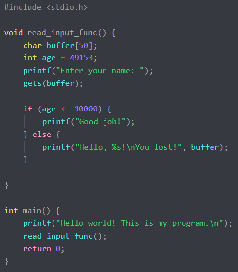
The first step of any research is getting familiar with the running program. Given how simple the code is, we can probably tell right away what will happen, but it's worth running anyway. In addition, I'm going about this as if I had no idea what the code said.
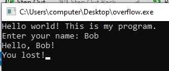
The only input we had control over was when the program asked for our name. Next, we can run the file in WinDbg and get some information about it. First, I retrieved the name of the main function:
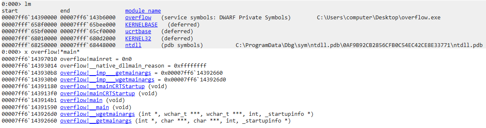
Next, I disassembled main:
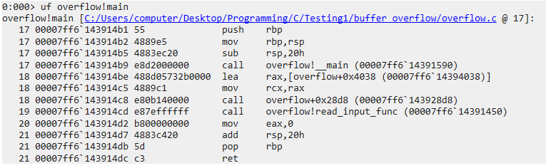
There's nothing interesting here except for the call to
read_input_func(), so we can take a look at that.
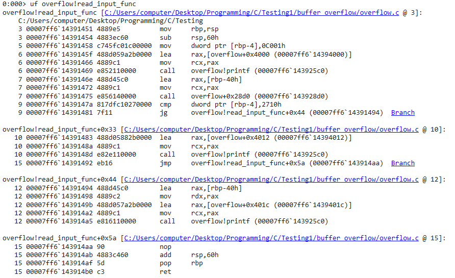
This is the brunt of the code. We can break it down into a few simple parts:
- Load 0C001h to rbp-4
- Call printf() on a string located at 14394000
- Call another function located at 143928d0 with the argument rbp-40h
- Compare the value in rbp-4 with the value 2710h
- If rbp-4 is less than or equal to 2710h:
- Call printf() on a string located at 14394012
- Return
- Otherwise if rbp-4 is greater than 2710h:
- Call printf() with the argument rbp-40h and a string located at 1439401c
- Return
Reading this, we can make a few assumptions:
- The code we ran read in a value and saved it, so rbp-40 is probably the buffer and 143928d0 is the function used to read it in
- We know the code is susceptible to an overflow vulnerability, so we can assume that the function used to read the buffer (143928d0) is something that doesn't check whether the accepted value will fit in the buffer
- That buffer is never used again except to print the user's name
- The conditional depends on two values that we have no control over, comparing rbp-4 (0C001h) and 2710h
Just to confirm, we can view the values of the strings that we observed (14394000, 14394012, and 1439401c).
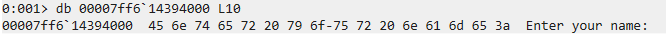
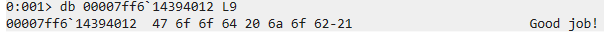
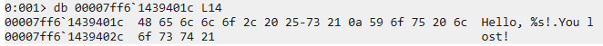
This mostly confirms our reasoning and, looking back to the code, tells us that to get the "Good job!" string printed, we need to make
rbp-4 less than or equal to 2710h.
First, let's run the program normally and see what happens on the stack.
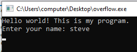
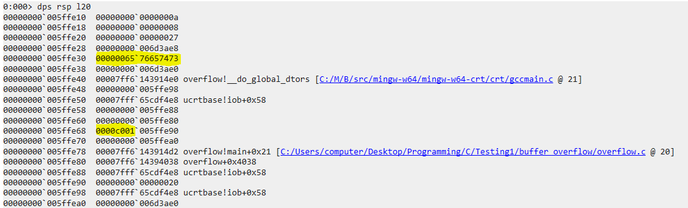
If we convert the name we submitted ("steve") to ASCII, we get 73 74 65 76 65; this is reflected on the stack at 005ffe30 and 005ffe34 (first highlight). We can also see our target C001h down at 005ffe68. Let's try a longer value just to confirm we can reach out a bit.
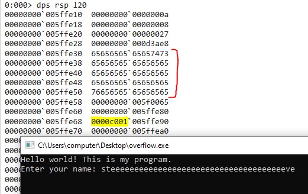
We can see that the storage for the string fills up and we get closer to overwriting C001h. If we do the math, we can determine that a length of 62 characters passed into the program should overwrite C001h but not the two bytes there that are already empty. Let's try that.
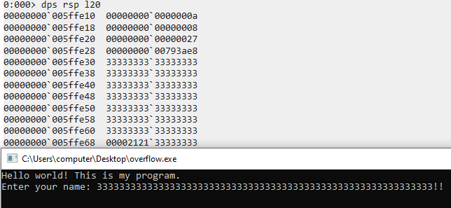
Now we have overwritten C001. I used exclamation points as they have ASCII values of 21h, meaning that two of them in a row will overwrite C001h to 2121h while still being less than 2710h, which was the requirement to hit the conditional properly.
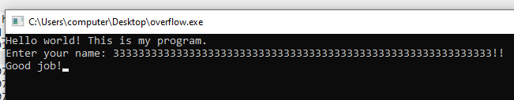
It worked!
If you tried it yourself, I hope that it all went well and you got the same result I did. Thanks for reading!